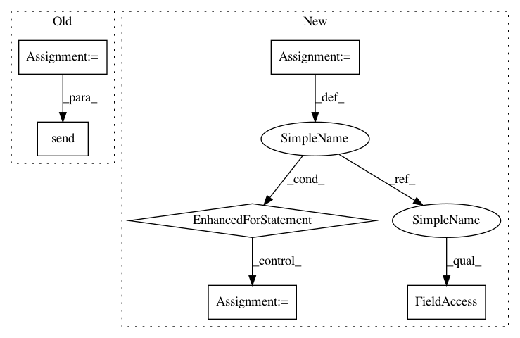

aec6216f3d6540baaa5b0bb9badca5a00f84b74d,perfkitbenchmarker/linux_packages/ycsb.py,YCSBExecutor,RunStaircaseLoads,#YCSBExecutor#Any#Any#,1092
Before Change
parameters["threads"] = client_count
if target_qps_per_vm:
parameters["target"] = target_qps_per_vm * len(vms)
start = time.time()
results = self._RunThreaded(vms, **parameters)
events.record_event.send(
type(self).__name__, event="run", start_timestamp=start,
end_timestamp=time.time(), metadata=copy.deepcopy(parameters))
client_meta = workload_meta.copy()
client_meta.update(parameters)
client_meta.update(clients=len(vms) * client_count,
threads_per_client_vm=client_count)
After Change
is_sustained)
is_sustained = FLAGS.ycsb_dynamic_load_sustain_throughput_ratio < (
actual_throughput / target_throughput)
for s in run_samples:
s.metadata["sustained"] = is_sustained
all_results.extend(run_samples)
target_throughput = self._GetRunLoadTarget(
actual_throughput, is_sustained)
if target_throughput is None:
In pattern: SUPERPATTERN
Frequency: 3
Non-data size: 6
Instances
Project Name: GoogleCloudPlatform/PerfKitBenchmarker
Commit Name: aec6216f3d6540baaa5b0bb9badca5a00f84b74d
Time: 2020-08-10
Author: yuyanting@google.com
File Name: perfkitbenchmarker/linux_packages/ycsb.py
Class Name: YCSBExecutor
Method Name: RunStaircaseLoads
Project Name: GoogleCloudPlatform/PerfKitBenchmarker
Commit Name: aec6216f3d6540baaa5b0bb9badca5a00f84b74d
Time: 2020-08-10
Author: yuyanting@google.com
File Name: perfkitbenchmarker/linux_packages/ycsb.py
Class Name: YCSBExecutor
Method Name: RunStaircaseLoads
Project Name: minerva-ml/open-solution-data-science-bowl-2018
Commit Name: 28ec5687220f562b3bd1b220ed80eded79c54824
Time: 2018-02-09
Author: kamil-kaczmarek@users.noreply.github.com
File Name: steps/pytorch/callbacks.py
Class Name: NeptuneMonitor
Method Name: on_batch_end
Project Name: minerva-ml/open-solution-data-science-bowl-2018
Commit Name: 28ec5687220f562b3bd1b220ed80eded79c54824
Time: 2018-02-09
Author: kamil-kaczmarek@users.noreply.github.com
File Name: steps/pytorch/callbacks.py
Class Name: TrainingMonitor
Method Name: on_batch_end